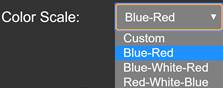

HDX-Viewer 1.2 - User manual
Toulouse Proteomics Infrastructure
Contact: https://github.com/david-bouyssie/hdx-viewer/issues
If you use HDX-Viewer for your research please cite:
David Bouyssié*, Jean Lesne*, Marie Locard-Paulet, Renaud Albigot, Odile Burlet-Schiltz, Julien Marcoux: HDX-Viewer: interactive 3D visualization of hydrogen-deuterium exchange data.
Bioinformatics, btz550, https://doi.org/10.1093/bioinformatics/btz550
*These authors contributed equally
Thursday 4th of July 2019
HDX-Viewer maps onto 3D structures HDX-MS data originating from DynamX or HDExaminer software suites. Alternatively, it is possible to upload custom-made CSVs following a predefined template to visualise deuterium uptake values from any other source. It allows the prompt inspection of results from individual samples, or the comparison of two experimental conditions. It can be found on our team's webpage and the corresponding scripts are accessible here. It is released under the CeCILL and GNU LGPL licenses.
Step-by-step description of the options:
Input Data:
Input format:
HDX-Viewer supports inputs coming from two different software suites (DynamX and HDExaminer). A predefined template (based on the HDExaminer CSV output) can also be loaded. The first user action consists in selecting one of the two radio button options:
· “DynamX”: to upload PML files coming from DynamX.
· “HDExaminer/CSV”: to upload CSV files coming from HDExaminer or a predefined template
Load Demo Files:

It is possible to click on the “Load Demo Files” button to test the application and all of the functionalities without loading any input file. The demonstration files correspond to the differential analysis of the SecB tetramer deuterated alone or in the presence of the ChAD peptide (Guillet et al, 2019 Nature Commun). The data represent the subtraction of deuteration uptakes from both data sets, ranging from -1% to 9.5%. A positive difference (in red) corresponds to regions that are more deuterated in the tetramer alone, i.e. regions that are protected (less deuterated) upon peptide binding. The demonstration files can be loaded either in the DynamX format or in the HDExaminer format (depending on the radio button that is selected). Please be aware we did not perform the same manual curation on the two provided files, so the computed deuteration uptakes are not identical, and the HDX-Viewer visualizations of DynamX and HDExaminer demonstration files may differ.
Upload Files:
Important note: uploaded files are temporarily stored on our servers and deleted monthly. If you close your browser, you won’t be able to restore your previous session and you will have to upload your files again.
PML/CSV and PDB files (HDX-MS and structural data, respectively) are uploaded separately. Once the adequate PML/CSV format has been selected (DynamX, HDExaminer/CSV, see “input format” section above), the second action consists in uploading your PDB file by pressing the “Upload PDB File” button. Only one PDB file can be uploaded at once. If you want to plot HDX-MS data on several PDB files, you need to concatenate them before uploading the resulting PDB file in HDX-Viewer and visualize the combined structures.
The PDB file upload will initialize a new session on the HDX-Viewer server. The PDB file will be parsed and a FASTA file containing the different amino acid chains of the PDB file will be generated. This FASTA file will be further used by HDX-Viewer to display an overlay of the amino acid sequence(s) it contains and of the provided deuteration uptakes.
If the PDB file has been parsed without any error a new button named “Upload PML/CSV Files” appears.
or
This will allow you to upload HDX-MS output files coming from experiments acquired with DynamX (PML) or HDExaminer (CSV) software suites, or a custom CSV based on the template presented below:
- The DynamX PML file is a Python-coded script designed to map user-defined colors to the residues of a protein 3D structure. It corresponds to the full kinetics of deuteration including all the time points from the exported heatmap.
Example of the ten first lines of a PML file generated by DynamX:
alter /SecB//ABCD/3, properties["SecB_apo - SecB_C4 30 sec"] = 0.030
alter /SecB//ABCD/4, properties["SecB_apo - SecB_C4 30 sec"] = 0.030
alter /SecB//ABCD/5, properties["SecB_apo - SecB_C4 30 sec"] = 0.046
alter /SecB//ABCD/6, properties["SecB_apo - SecB_C4 30 sec"] = 0.046
alter /SecB//ABCD/7, properties["SecB_apo - SecB_C4 30 sec"] = 0.046
alter /SecB//ABCD/8, properties["SecB_apo - SecB_C4 30 sec"] = 0.046
alter /SecB//ABCD/9, properties["SecB_apo - SecB_C4 30 sec"] = 0.046
alter /SecB//ABCD/10, properties["SecB_apo - SecB_C4 30 sec"] = 0.046
alter /SecB//ABCD/11, properties["SecB_apo - SecB_C4 30 sec"] = 0.046
alter /SecB//ABCD/12, properties["SecB_apo - SecB_C4 30 sec"] = 0.046
This script replaces the B-factor (reflecting the atom mobility) of each covered residue from the PDB file by its deuteration rate. Each line is organised as follows:
alter /<name of the object on the PDB file>//<chain(s) name(s)>/<residue position in the sequence of the corresponding PDB file>, properties[“<experimental condition> <time point>”] = <deuteration rate>
- name of the object on the PDB file: In this case, SecB corresponds to the name of the object in the PDB file.
- chain(s) name(s): ABCD corresponds to the 4 chains of the tetrameric SecB in the PDB file.
- residue position in the sequence of the corresponding PDB file: numerotation in the PDB file, which can be different from the one of the user in the case of N-ter tags or specific isoforms (In this example, the first covered residue is the third one). The residues in the PDB that do not have any values in the PML file will be attributed a “neutral” color that can be defined by the user in HDX-Viewer (see “Undetected Region Color” section below).
- experimental condition and time point: here, “SecB_apo - SecB_C4 30 sec” corresponds to the experimental condition. In this example, it is the subtraction of the deuteration rates between the protein alone (SecB_apo) and the protein incubated with its ligand (SecB_C4) after 30 sec of deuteration.
- deuteration rate: deuteration rate or difference of deuteration rates, or any other numeric value that the user would like to see color-coded in the 3D output of HDX-Viewer.
The example above only shows the first 10 lines of a typical PML file. The following lines include the results obtained for all the residues at all the time points of the kinetics.
- The CSV files generated by HDExaminer correspond to the full kinetics of deuteration including all the time points from the exported heatmap.
The first column contains the residues for which deuteration values have been acquired. The undetected residues appear with values set to 0 for each timepoint (see residue 7 below). The second column is not necessary and has been suppressed in the custom CSV template (see below). The following columns require the timepoint expressed in sec (and written “Xs”) in the header as well as the percentage of deuteration for each corresponding residue. The additional columns with headers entitled “Xs - spread” are not used by HDX-Viewer.
HDExaminer CSV file example:
Start,End,5s,10s,5s - spread,10s - spread
3,3,0.716,0.676,0.059,0.051
4,4,0.741,0.802,0.050,0.047
5,5,0.741,0.802,0.050,0.047
6,6,0.146,0.164,0.029,0.021
7,7,0,0,0.029,0.021
8,8,1,1,0.043,0.049
9,9,1,1,0.046,0.058
10,10,0.393,0.490,0.052,0.063
11,11,0.071,0.076,0.043,0.049
This should be displayed in your spreadsheet editor as:
Start End 5s 10s 5s - spread 10s - spread
3 3 0.716 0.676 0.059 0.051
4 4 0.741 0.802 0.050 0.047
5 5 0.741 0.802 0.050 0.047
6 6 0.146 0.164 0.029 0.021
7 7 0 0 0.029 0.021
8 8 1 1 0.043 0.049
9 9 1 1 0.046 0.058
10 10 0.393 0.490 0.052 0.063
11 11 0.071 0.076 0.043 0.049
- The CSV file that can be used as a template to manually upload HDX-MS data is a simplified version of HDExaminer CSV outputs:
Example of the ten first lines of a custom CSV input:
Residues,5s,10s
3,0.716,0.676
4,0.741,0.802
5,0.741,0.802
6,0.146,0.164
7,0,0
8,1,1
9,1,1
10,0.393,0.490
11,0.071,0.076
This should be displayed in your spreadsheet editor as:
Residues 5s 10s
3 0.716 0.676
4 0.741 0.802
5 0.741 0.802
6 0.146 0.164
7 0 0
8 1 1
9 1 1
10 0.393 0.490
11 0.071 0.076
These PML/CSV files may have been generated either in differential mode (difference between two experiments) or non-differential mode (single condition). This will not impact HDX-Viewer visualization, except that the deuteration range will change in differential mode since negative values are also expected.
In any case, multiple PML/CSV files can be uploaded at the same time, or sequentially by clicking multiple times on the “Upload PML Files” button. Note that each batch of PML/CSV files uploaded to HDX-Viewer will be merged into a master PML file. The final visualization thus corresponds to the concatenation of all the uploaded PML/CSV files in the current HDX-Viewer session.
Important notes:
- It is the responsibility of the user to carefully export the data from DynamX and make sure that the naming and numbering of the chains correspond to the ones in the PDB file uploaded together with the PML file(s).
- In the case of HDExaminer or the predefined template, the different chains of the PDB file are automatically detected. A scrolling menu appears and the user must select the appropriate chain(s) before uploading the corresponding CSV files.
Download results:
This button can be used to download either the uploaded files or the demonstration files.
Downloading the demonstration files can be useful to check the input file format required to run the application for the two supported software.
Upon clicking on the button “Download Results”, a browser appears to choose where to save the corresponding results as a ZIP file.
This ZIP file contains:
- the PML/CSV and PDB used as input files.
- the FASTA sequence(s) of the protein(s) extracted from the PDB file. Be aware that this may not correspond to the entire protein sequence(s) since only the residues present in the PDB file will be reported.
- one PDB file per time point of the kinetics (with the HDX-MS results stored in the B-factor of each amino-acid). These PDB files can be used in any other 3D visualization software for further analysis.
Selection of the condition to visualize:
Once the input files have been uploaded, a scrolling menu appears and enables to choose the condition and time point to visualize among all the conditions/time points of the experiment.
Viewer Options:
Deuteration Range:
Enter the minimum and maximum deuteration values (%) that you want to use as the starting and ending points of the color scale. Click on the Apply button to execute. By default, the minimum and maximum values are determined from the PML/CSV file.
Color Scale:
Choose between the different color scales that are available in the scrolling menu: “Blue-Red”, ”Blue-White-Red and ”Red-White-Blue”.

Alternatively, you can customize the color gradient by choosing “Custom” in the scrolling menu, and the colors corresponding to its minimum (“Min Value Color”) and maximum (“Max Value Color”) values.
Undetected Region Color:
This feature enables to change the color of the residues that have no deuteration value (not detected in the HDX-MS experiment). The user can choose either grey, black or white in the scrolling menu. Importantly, any residue present in the PDB file but not mentioned in the PML/CSV file will be considered as undetected.
Background Color:
This feature enables to change the color of the background. The user can choose either black or white in the scrolling menu.
Representation:
This feature enables to change the representation of the 3D structure. The user can choose among 15 different types of representation including cartoon, surface, rope, sticks...
Spinning options:
This feature enables to rotate the 3D structure by pressing the “Start Spinning” button. The rotation speed can be adjusted in the field “Angle (radians)” (0.005 is set as the default value).
Animation options:
This feature enables to visualize the different time points of deuteration one after the other, creating a timelapse by clicking on the “Start Spinning” button and after adjusting the speed in the “Delay (ms)” field. 1,000 ms is set as the default value. A continuous loop can be obtained by clicking on the “Loop forever” box. The animation feature can be combined with the spinning feature.
NGL Viewer:

The user can zoom in and out, move and rotate the structure with the mouse control.
A full screen visualization can be obtained by clicking on the “Full Screen Mode” button.
At any time, a PNG file can be obtained by clicking on the “Export As PNG” button.
Similarly, when using the animation option, spinning option, or both, a GIF file can be obtained by clicking on the “Record GIF” button. The user can stop the recording by clicking a second time on this button. The corresponding GIF automatically opens in a new window/tab of the internet browser.
At any time, an orientation can be saved by clicking on the “Save Orientation” button. It can be restored later by clicking on the “Restore Orientation” button.
Double-clicking on any residue will center the viewer on this residue.
MSA Sequence Viewer:
The protein sequences extracted from the PDB corresponding to the different chains are visualized with the MSA Viewer at the bottom of the page. The user can scroll along the sequences by clicking and dragging with the mouse.
Each residue of the different chains is color-coded with the deuteration rate using the colors defined for the 3D visualization. In the example presented here, the 4 sequences are colored identically because the PDB file corresponds to a homotetrameric assembly (4 chains with identical sequences). In the case of an hetero-oligomeric complex, each protein sequence is colored differently, according to its deuteration rates. Double-clicking on any residue will highlight it in green, both on the MSA sequence viewer and NGL viewer. The different options of the MSA sequence viewer (Sorting / Selection / Vis. elements / Color scheme / Extras / Export / Help) are described elsewhere (https://github.com/wilzbach/msa/wiki/User-manual).
Reference:
Guillet V, Bordes P, Bon C, Marcoux J, Gervais V, Julie Sala A, Dos Reis S, Slama N, Mares-Mejía I, Cirinesi AM, Genevaux P, Mourey L (2019) “Structural insights into chaperone addiction of toxin-antitoxin systems” Nature Communications 10(1):782.